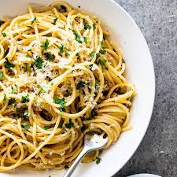

Pasta Aglio e Olio

Description
So you've seen the cinematic/foodie masterpiece that is Chef, and now here you are. I have been
there myself. When Chef Carl Casper creates that perfectly sculpted spiral mound of spaghetti,
you cannot help but wonder, "what is that?" So you begin searching the internet and it does'nt
take much more than a quick google search like "Chef pasta" and there it is. Endless links to
what seem like a hundred iterations of this seemingly simple pasta.
After having tried several of the different iterations of this pasta, I am obliged to share
my favorite with all of you passerby on the world wide web. So without further ado (I know how
dreadful it can be when a recipe site babbles on and on before just getting into it) here it
is, Chef Carl Caspers "Pasta Aglio e Olio"
Ingredients
- 1 lb protein of your choice (I prefer scallops)
- 2 tablespoons butter
- 1 lb pasta of your choice (I prefer Spaghetti)
- 1 Cup Flat leaf parsley, minced
- 1 Cup evoo
- 12 large garlic cloves, cut into slivers
- 1 Tablespoon crushed red pepper
- 1/2 Cup parmesan cheese, freshly grated
- Sea salt, to taste
- Black pepper, to taste
- 2 lemons
Steps
- Bring a large pot of salted water to a boil and add the spaghetti, cooking until al dente
8-10 minutes. Drain.
- Heat olive oil in a large pan over medium heat. Add garlic and stir frequently until the
garlic is golden brown. Add red pepper flakes, sea salt and pepper.
- Sautee the scallops in butter until cooked through. Season lightly with salt and pepper
- Add the drained spaghetti directly to the pan. Toss until spaghetti is thoroughly coated
with the garlic oil.
- Remove pan from heat, add the scallops, parsley and parmesan and toss well. Check for flavor and
adjust the salt if necessary. Squeeze lemons to taste. Garnish with more parmesan.
- Serve Beautifully